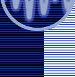

| services |
| home page |
| . Government Resources for the events of September 11th. Federal Acquisition Management Information System (FAMIS) (An Enhanced Federal Procurement Data System) The Federal Procurement Data Center The Federal Procurement Data Center (FPDC), part of the U. General Services Administration, operates and maintains the Federal Procurement Data System (FPDS). The FPDS is the central repository of statistical information on Federal contracting. |
|  |